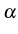
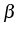
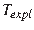
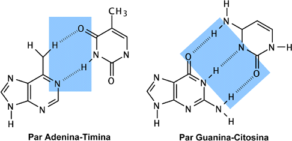

Para neutralizar las cargas polares del esqueleto peptídico, las proteínas adoptan conformaciones que maximizan la formación de puentes de hidrógeno, gracias a la libertad de giro de los enlaces situados inmediatamente antes y después del enlace peptídico. Esto lo hacen principalmente formando -hélices dextrógiras, láminas , como se muestra en las figuras 1.11, 1.12, 1.13 y 1.14, y giros de varios tipos, en menor medida.
|
|

|
|  |

|
La estructura secundaria de las proteínas se puede codificar de manera similar a la secuencia primaria, asignando a cada residuo una letra que identifica el estado de estructura secundaria en que se encuentra. Se suele identificar a los residuos de una -hélice con H, los de una lámina con E y los demás con C, del inglés coil . Ésta sería la clasificación simple de 3 estados, que puede afinarse más llegando a 8 estados:
La misma secuencia que vimos antes podría tener esta estructura secundaria de 3 estados:
MFSQHNGAAV HGLRLQSLLI AAMLTAAMAM...
EEEECCEEEE HHHHHHHHHH CCCCCCCCCC...
Cuando forman parte de un elemento de estructura secundaria,
los aminoácidos adoptan conformaciones características, que se pueden resumir en forma de
diagramas de Ramachandran
(Ramachandran & Sasisekharan, 1968),
que muestran la distribución de valores de los ángulos  y
y  observados a la largo del esqueleto de una proteína:
observados a la largo del esqueleto de una proteína:

|
La estructura secundaria de los ácidos nucleicos está también basada en la formación de puentes de hidrógeno, dada la naturaleza polar de los nucleótidos. Para el caso del ADN, como se muestra en la figura 1.17, el repertorio de puentes de hidrógeno posibles es muy limitado: adenina (A) con timina (T) y guanina (G) con citosina (C).
|  |
Estos emparejamientos son la base de la estructura secundaria de los ácidos nucleicos, que suelen ser patrones repetidos helicoidales. En el caso del ADN se suelen formar entre dos polinucleótidos de secuencia complementaria, mientras que en el ARN son estructuras ( stems , loops ,...) que se forman dentro del mismo polinucleótido, como se muestra en la siguiente figura:

|
{kind=link}